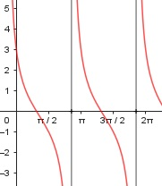

Aufgabe 190 3 – 2 * tan x f(x) = ----------------- x im Bogenmaß 1 + 2 * tan x sin x 3 – 2 * ------- cos x f(x) = ------------------ sin x 1 + 2 * ------- cos x 3 * cos x – 2 * sin x f(x) = ----------------------- cos x + 2 * sin x 1. Ableitung: Produkt-, Summen- und Quotientenregel u = 3 * cos x - 2 * sin x, u' = -3 * sin x - 2 * cos x v = cos x + 2 * sin x, v' = -sin x + 2 * cos x (-3sin x – 2cos x) * (cos x + 2 sin x) f'(x) = --------------------------------------- - (cos x + 2sin x)2 (3cos x – 2sin x) * (-sin x + 2cos x) - --------------------------------------- (cos x + 2sin x)2 -3cos (x)sin (x)- 6sin2 x – 2cos2 x f'(x) = ------------------------------------- - (cos x + 2sin x)2 4cos (x)sin (x) + 3cos (x)sin (x) – 6ccos2x - -------------------------------------------- - (cos x + 2sin x)2 2sin2 x + 4cos (x)sin (x) - ----------------------------- (cos x + 2sin x)2 -8sin2 x – 8cos2 x f'(x) = ---------------------- (cos x + 2sin x)2 -8(sin2 x + cos2 x) f'(x) = --------------------- (cos x + 2sin x)2 -8 f'(x) = -------------------- (cos x + 2sin x)2 2. Ableitung: Summen., Ketten- und Quotientenregel u = -8, u' = 0 v = (cos x + 2sin x)2, v' = 2 * ( cos x + 2sin x) * (-sin x + 2cos x) 0 – (-8) * 2 * (cos x + 2sin x) f''(x) = --------------------------------- * (cos x + 2sin x)4 (-sin x + 2cos x) * --------------------- (cos x + 2sin x)4 16 * (2cos x – sin x) f''(x) = ------------------------ (cos x + 2sin x)3 Zur Beurteilung, ob f'''(x) ≠ 0: u = 16 * (2cos x – sin x), u' = 16(-2sin x – cos x) u' = -16(2sin x + cos x) u' -16(2sin x + cos x) --- = ------------------------ = v (cos x + 2sin x)3 -16 = ------------------- (cos x + 2sin x)2 --> ist ≠ 0 für alle x Polstelle: (cos x + 2sin x) = 0 + 2sin x = 0 |-2sin x = -2sin x |2 1 – sin2 x = 4sin2 x |+sin2 x 1 = 5sin2 x |:5 sin2 x = 0,2 |√ sin x1,2 = ± 0,447 x1 = π – 0,447 = 2,69 x2 = 2π – 0,447 = 5,84 weiterhin gilt: der Tangens ist an den Stellen π/2 und 3π/2 nicht definiert, er strebt gegen ±∞. Hat f(x) dort allerdings einen Grenzwert, kann die Definitionslücke damit geschlossen werden. x -------- geht gegen 0 für x gegen π/2 oder 3π/2 tan x Umformung ergibt: 3 tan x(--------- - 2) 3 – 2tan x tan x f(x) = --------------- = ---------------------- 1 + 2tan x 1 tan x(-------- + 2) tan x 0 - 2 f(x) = ------- = -1 0 + 2 Die Lücken können durch f(x) = -1 geschlossen werden. Definitionsbereich: 0 ≤ x ≤ 2π x ≠ π/2, 3π/2, 2,69, 5,84 Symmetrie zur y-Achse bzw. zum Punkt (0|0): 3 – 2 * tan (-x) f(-x) = ------------------- 1 + 2 * tan (-x) 3 + 2 * tan x f(-x) = --------------- ≠ f(x) 1 – 2 * tan x --> keine Achsensymmetrie -(3 + 2 * tan x) -f(-x) = ------------------ 1 – 2tan x -3 – 2tan x -f(-x) = ------------- ≠ f(x) 1 – 2tan x --> keine Punktsymmetrie Wertebereich: -∞ < f(x) < ∞ Nullstellen: f(x) = 0 3cos x – 2sin x ----------------- = 0 |*(cos x – 2sin x) cos x – 2sin x 3cosx – 2sinx = 0 |+2sin x 3cosx = 2sin x |:cos x 3 = 2tan x |:2 tan x = 1,5 --> x = 0,98 im Bogenmaß Der Tangens ist am Einheitskreis im 1. Und 3. Quadranten positiv: x1 = 0,98 x2 = π + 0,98 = 4,12 N1(0,98|0), N2(4,12|0) Schnittpunkt mit der y-Achse: x = 0 3 – 2tan 0 3 f(0) = ------------- = --- = 3 1 + 2tan 0 1 Sy(3|0) Extrempunkte: f'(x) = 0 -8 ------------------- = 0 |(cos x + 2sin x)2 (cos x + 2sin x)2 -8 = 0 Widerspruch --> keine Extrempunkte Wendepunkte: f''(x) = 0 16(2cos x – sin x) --------------------- = 0 |*(cos x + 2sin x)3 (cos x + 2sin x)3 16(2cos x – sin x) = 0 |:16 2cos x – = 0 |+ 2cos x = |2 4cos2 x = 1 – cos2 x |+cos2 x 5cos2 x = 1 |:5 cos2 x = 0,2 |√ cos x1,2 = ± 0,447 x1 = 1,107 x11 = π + 1,107 = 4,25 3 – 2 * tan 1,107 f(1,107) = ------------------- = -0,2 = f(4,25) 1 + 2 * tan 1,107 x2 = 2 keine Lösung, denn 16(2cos 2 – sin 2) = -27,9 ≠ 0 WP1(1,107|-0,2), WP2(4,25|-0,2) Graph:
